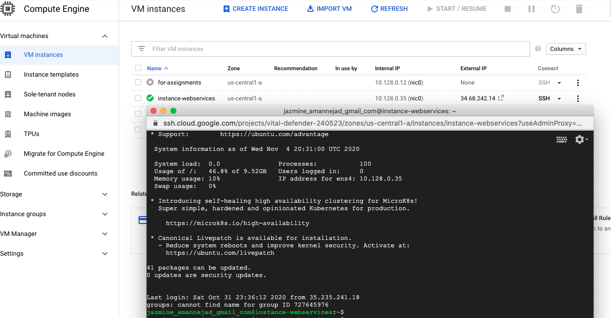

In this activity, you will create a virtual machine (VM) on Google Cloud to run your REST API code which connects to a SQL database hosted on the same VM.
Students registered in the course can redeem their course credits for Google Cloud platform and use it for the activity and also for their course projects. The instruction to access Google Cloud course credit is provided in the course homepage.
In this part, you will create a VM on Google Compute Engine.
VM Setup
- Go to the Google Cloud console page.
- Check the top of the page and make sure that you have an active project listed in the header bar and your billing account is active for your project.
- Go to the Compute Engine tab and create a VM. Here is the detail you may use (vCPU: 2, Operating system: Ubuntu 20.04. Allow http and https traffic to your instance. Let the other parameters stay in their default levels). Among these, the selection of the operating system is important to make sure that you can follow the commands in this activity.
- Click on save to create your instance and make sure that it is running.Your VM will receive a public IP that you can use to access services running in it.
Network Setup
- If you will run an application that uses special ports, you need to open those ports in the firewall, otherwise, you will not be able to access the service. For this, you need to create new rules in your firewall. To access the firewall configurations, click on the "View network details" from the settings () of your VM.

- Create a new rule, and assign a name for your rule, and add that in the target tags as well. Set the source IP to 0.0.0.0/0 to let clients be able to access your application from anywhere. Set the ports you want to open, e.g., 80, 443, 8080, 8081, 3306, under ‘Protocols and ports' or you may open all ports (not recommended). Opening port 3306 (or database port) is only needed when you need to connect to the database from a different machine.
- After saving your rule, click on the name of your VM instance to edit its properties. Add the rule you defined to the network tags of your VM.
Setup Static IP
- When you start your VM, it receives a public IP address, but the address may change when you stop and restart the VM instance. If you want to keep your VM IP address to stay the same, you can assign a static IP address. This can be done in the network tab (right above the Firewall tab that you just worked with).
- Reserve a standard static IP V4 address and attach it to your VM instance by selecting the name of your instance from the list. (Later, you can use this IP address to define the authorized networks for your CLoud SQL instance.)
- Login to your VM using ssh, and first update your system:
sudo apt update
- Install MySql, and start the service.
sudo apt install mysql-server
sudo systemctl start mysql.service- Then, you may connect to your mysql environment using:
sudo mysql- Then run the following ALTER USER command to change the root user's authentication method to one that uses a password.
ALTER USER 'root'@'localhost' IDENTIFIED WITH mysql_native_password BY 'your-password';
exit;- Then, you can run the following command to do the installation. You will be prompted to answer a couple of questions. When you are asked to enter the password of the root user to start the installation process, you should use
your-password. You can change the password of the root user while installing it.
sudo mysql_secure_installation;
- Now, you may connect to your mysql environment. It is recommended that you enable password for your root user, but if you have not done so, you do not need to pass
-poption.
sudo mysql -u root -p- You can now use sql command to create databases, tables, and insert some records. To create a database you can use (
create databasemy_database). You can now enter mysql commands to use an existing database (usemy_database), or see the existing databases (show databases;).
show databases;
create database my_database;
use my_database;- You can now create your tables and insert data into your tables. Here is a sample code to create an employee table and add a record into the table.
CREATE TABLE rest_emp (id INT AUTO_INCREMENT PRIMARY KEY, name varchar(255) not null, phone varchar(12), email varchar(255) not null, address varchar(255)not null);
insert into rest_emp(name, phone, email, address) values ('Demo User', '111 111 1111', 'demo.user@test.com', '100 Street SW');
select * from rest_emp;
- When your database is ready, you can connect locally to your database. If you want to connect to your database from elsewhere, you need to change the mysql configurations to allow remote access. First, you need to make a change in your mysqld.cnf file. Open your mysqld.cnf. (depending on the installed database version, the location of the file might be slightly different on different systems).
sudo nano /etc/mysql/mysql.conf.d/mysqld.cnf- Navigate to the line that begins with the
bind-addressdirective. The default value will be127.0.0.1, meaning that the server will only look for local connections. You will need to change this directive to reference an external IP address, or set it to0.0.0.0meaning that it can be accessed from anywhere. The last option is not secure and appropriate for production servers, but for practice, it might be easier to use. - Then, you should grant remote access to your user.
We are going to setup a restAPIs that are written Express JS and you can run them on a node JS environment. To do this, login to your VM and let's set up nodeJs and also download the given sample code from Github and run it. Click on SSH to login to your machine:

Setting up Node on Ubuntu 20.04
- When you start a new operating system, you would normally update it by running this command:
sudo apt update- Run the following commands. (Here is a reference that you may use.)
sudo apt install nodejs- To confirm your installation, check the version of your Node using:
nodejs -vSetting up Git on Ubuntu
- Install Git on your system. To do this, run the following commands.
sudo apt install git
git --versionDownload and Run the Sample Code
- Clone the Git repository to get the sample code:
git clone https://github.com/Yasaman-A/restAPI_template.git
cd restAPI_template/- The code requires your database credentials. These need to be added to a file called .env (which you should create).
- Create the .env file under your rest-API-examples folder and open it to modify it:
touch .env
nano .env- Add your database information to the .env file, e.g.,
DB_HOST=127.0.0.1
DB_PORT=3306
DB_NAME=my_database
DB_USER=root
DB_PASS=SecReTP@ssw0rd- Save your .env file. To confirm the file content, you can view the content using the "cat" command:
cat .env- The dependencies are listed in the package.json file. To install the dependencies, run:
npm install- Now, you can start the code by:
npm start- You should be able to access the rest endpoints. Open your browser or your Postman and submit a Get request to the /api/emp endpoint. For example:
http://serverIP:8080/api/endpoint
- If your VM and database is up and you still do not get a response, the potential problem could be that the setting of the firewall is not done properly and port 8080 is not accessible. Another source of issue could be that the information in the .env file is not entered properly.
- In the setup we did in this activity, the https is not set up on the server. You should still be able to call and test your endpoints from Postman or the front end code you write locally.